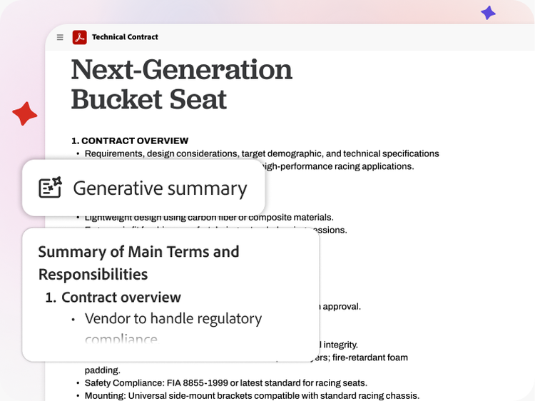

Board packets.
Keep the caveats.
Acrobat versus Super Powers AI for the work before a meeting: finding the source, preserving uncertainty, and turning unresolved questions into a useful reading brief.
A polished summary can be less useful than a short list of precisely located questions. For a volunteer coordinator assembling several reports, the goal is not to make every document agree. It is to show what the packet actually supports.

Start with the document job
Acrobat: work inside the packet
Adobe advertises AI summaries with source citations, multi-document PDF Spaces, and interactive reports. Acrobat Pro provides PDF editing, comparison and e-signature workflows; Studio adds AI-powered document features. It would be misleading to describe Acrobat as only a passive PDF reader.
Choose it first when your core need is working with PDFs and navigating back to their contents. A citation is a route to checking a claim, not a guarantee the interpretation is correct. Official features.
Super: coordinate the surrounding work
Super's published capabilities include cloud browsers, research and reports, apps, MCP and a desktop CLI. A bounded use case is drafting a non-sensitive reading brief from approved material and preparing questions for a human coordinator.
This is a proposed workflow, not evidence of a dedicated Acrobat connector, secure board portal, or tested access to your files. A browser-capable assistant is not automatically an approved repository for confidential documents. Super capabilities.
A brief that survives a second reader
Before uploading anything, confirm organizational approval for the service and the material. Personnel matters, private donor information and other restricted content may belong only in an approved system. Use sanitized examples for an initial trial.
- Freeze the reading set. Record each filename, revision date and page locator. If a file changes, the old summary is not automatically a summary of the new packet.
- Separate extraction from interpretation. Write the exact fact and locator first. Put your inference in a separate sentence so someone else can disagree with it.
- Preserve contradictions. If two documents give different dates, show both and ask which applies. Do not silently choose the later-looking date without checking its context.
- Turn gaps into questions. Name the missing information, a proposed owner and a needed-by date. A request for confirmation is not confirmation.
- Review before circulation. A human checks each retained statement against the packet and approves the audience. Neither a summary nor this page records a board decision.
For example, a program report may describe a planned workshop while a logistics note still calls the venue tentative. A good brief keeps that dependency visible. “The workshop is confirmed” is a stronger statement than either source supports.
Three claims, two sources
Fictional training excerpts, not real organizational records. Judge each claim against the full two-document set. “Not established” means the supplied excerpts do not support the claim; it does not prove the claim false.
Program update / revision A / p. 2
The volunteer workshop is planned for October 12. The room booking remains tentative. Registration is not yet open.
Logistics note / revision B / p. 1
The volunteer workshop is planned for October 19. The room booking remains tentative. Registration is not yet open.
Costs and fit, not a fabricated winner
Adobe's US individual-plan comparison on September 16, 2026 listed Acrobat Pro at US$19.99/month and Studio at US$24.99/month for annual plans billed monthly. Reader was free. Annual billing is a commitment, not a cancel-anytime monthly plan; Adobe listed an early-cancellation fee after 14 days. Business, nonprofit, regional and promotional terms may differ. Current comparison · Plan selection.
Super advertises pay-as-you-go wallet usage with optional managed-device offerings. That is not directly equivalent to an Acrobat seat. An additional assistant is worthwhile only if the approved cross-tool work justifies its usage cost and the time spent reviewing results.
If your packet already lives in an approved PDF workflow and you only need a cited summary, start there. If the real task spans approved public research, a reading brief and draft follow-up messages, evaluate Super on that complete workflow. Compare the quality of the final checked brief, not the fluency of the first answer.
Where the computer-use cache helps
Super's public computer-use cache is concrete implementation evidence. In the reviewed revision ee5774e, normalized requests identify reusable responses; an eligible hit avoids another upstream model call. Misses and bypasses go upstream. TTL and eligibility settings affect reuse; streamed misses are not stored.
A cached response does not certify the current packet revision. Repeating a prompt that refers to an external file does not establish that its contents are unchanged. The implementation stores request and response data, so review the data path before using sensitive material. Public code does not establish every deployed configuration, and no time or cost savings were measured for this board-packet example.
A useful first trial
Choose one approved, non-sensitive packet and ask for five claims with exact file and page locators, plus a separate unresolved-questions list. Have a second reader check the source matches, caveats and contradictions. Record corrections. Do not let the assistant send the brief or make organizational decisions as part of that first trial.
Acrobat may already cover the whole reading task. Super is a candidate for the work beyond it, not a reason to remove a competent document system. This article is published by Super Powers AI and is not an independent ranking, a security audit, or governance advice.
Evaluate Super Powers AI · Related: keep credentials out of the handoff